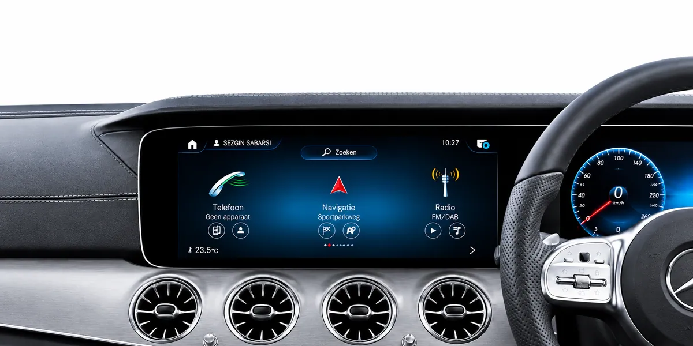

Mercedes-Benz
C Class (W205)
2014 – 2021Premium compact executive car
Sedan / Estate

Region Change
Change the system region from any region to any other region. This includes adding the appropriate language pack, adjusting radio frequencies, installing local navigation maps, and enabling clock adjustment and traffic sign recognition features.
Local Navigation Maps
Installation of the latest available version of local navigation maps.
Radio Frequency Change
Adjust the radio frequency range to match the requirements of the selected region.
Apple CarPlay
Add Apple CarPlay functionality using one of two options:
- Factory-style activation: The original factory CarPlay uses half of the screen and works only via a wired connection.
- Additional module: A separate module is installed behind the dashboard, enabling full-screen Apple CarPlay with wireless connectivity.
Android Auto
Add Android Auto functionality using one of two options:
- Factory-style activation: The original factory Android Auto uses half of the screen and works only via a wired connection.
- Additional module: A separate module is installed behind the dashboard, enabling full-screen Android Auto with wireless connectivity.